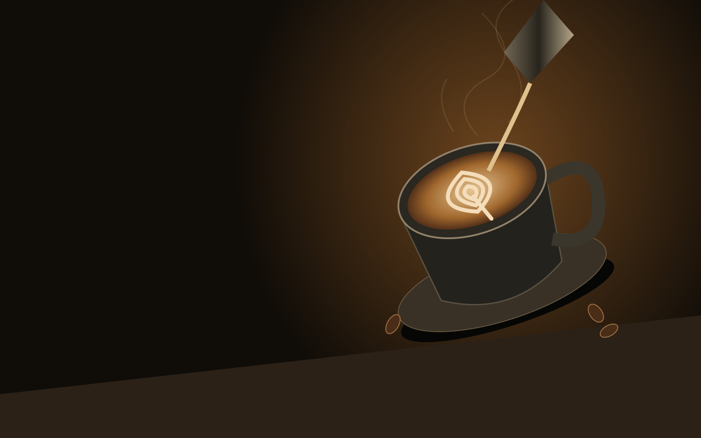

SIGNATURE
Honey Lavender Latte
House lavender, wildflower honey, oat milk and double ristretto. Floral, never perfumey.

A DAILY RITUAL. NOT A ROUTINE.
Specialty coffee, direct-trade beans, and craft drinks — served daily in the heart of Marlow.
SINCE 2019
We started Ember & Ground with one conviction: great coffee requires obsessive attention at every step. From farm selection to final pour, nothing is left to chance.
Our beans travel from single-origin farms in Ethiopia, Colombia, and Guatemala. Every roast is calibrated weekly. Every extraction is dialled in by hand.
Our illustrative sourcing journey follows the harvest, with twelve origins and three partner roasters. Ask at the bar about the grower behind your cup and what we’re pouring this week.
CRAFT IN A CUP
Recipes developed in-house, refined over seasons,
impossible to find elsewhere.
House lavender, wildflower honey, oat milk and double ristretto. Floral, never perfumey.
24-hour concentrate, Mediterranean tonic, fresh lemon and ice. A little unexpected.
20ml ristretto. 20ml steamed whole milk. No foam. Sharp. Focused. Essential.
WHAT PEOPLE SAY
“One of the best flat whites I’ve ever had. The oat milk game is on another level.”RACHEL T. · SAMPLE REGULAR SINCE 2021
“The Cold Brew Tonic is ridiculous. I came back three days in a row.”JAMES K. · SAMPLE VISITOR REVIEW
“They actually know where their beans come from. That’s what specialty coffee is supposed to be.”PRIYA M. · SAMPLE LOCAL REVIEW